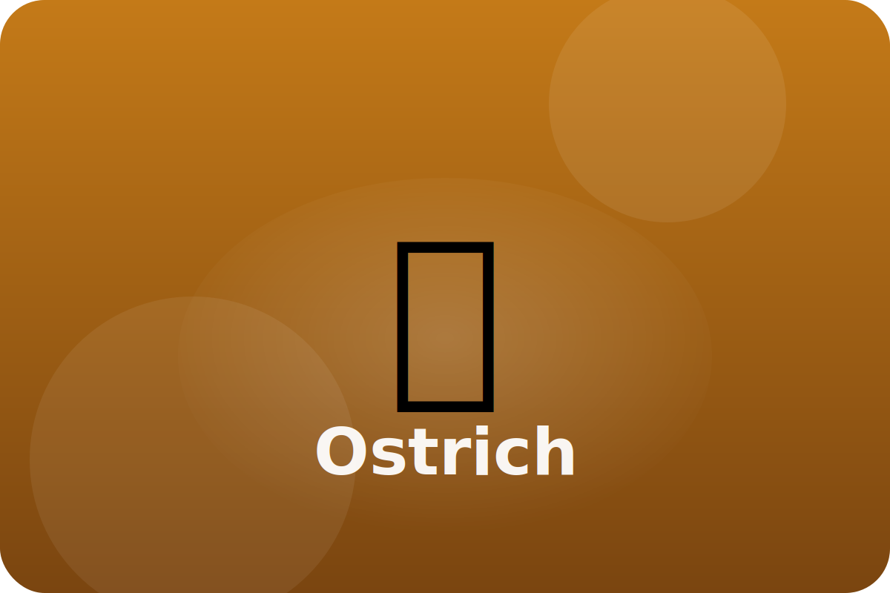

Savannah
Fast steps and strong legs
Ostriches cannot fly, but they can run faster than most animals on the savannah.
Two-Toed Feet
Each foot has two large toes that act like springs to push the bird forward.
Feathery Shade
Loose feathers act like umbrellas, shading the ostrich's skin from the sun.
Big Eyes
Huge eyes help ostriches spot predators from far away.
Keep exploring the Ostrich
Watch the Ostrich in action
Ostrich Facts for Kids (Homeschool Pop)